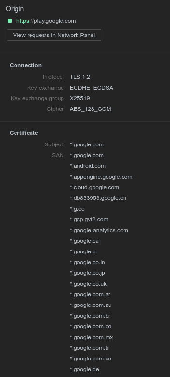

子域名收集笔记
前言
思路如下：
公开情报：证书，DNS解析记录，站内URL。
非公开情报：子域名枚举，DNS域传递，客户端接口，Github等托管平台，能够收集用户上网数据的公司。
搜索引擎
也可以用其他搜索引擎，这个效果不是很好，Google hacking如下
|
|
使用”-“减号来去除已知子域名
|
|
证书
Certificate Transparency logs
谷歌Chrome要求2017年所有SSL证书都要支持证书透明，所以可以根据CT log查询支持HTTPS网站的子域名。
Subject Alternative Name
根据多域名证书的Subject Alternative Name中的内容，可以获取同一公司的其他域名。

DNS域传递
|
|
前端
爬URL
crossdomain.xml
国内公开信息
工信部，链接地址如下，进去之后无法获取验证码，右键验证码新窗口打开。
http://www.miitbeian.gov.cn/publish/query/indexFirst.action
工商网监,主要涉网信息
http://szcert.ebs.org.cn
NSEC
NSEC ldnsutil
|
|
NSEC3 nsec3walker
|
|
域名服务商私有DNS记录
添加域名，然后查看导入DNS记录
|
|
网络公开情报
VirusTotal是一个在线检测恶意样本或链接的网站，有自己的DNS数据集。
HackerTarget上可以根据IP反查相关域名，但是不全
https://hackertarget.com/reverse-ip-lookup/
可以使用HackerTarget收费的服务查看更完全的数据
https://hackertarget.com/domain-profiler/
DNSdumpster是一个免费的域名分析网站，是HackerTarget旗下项目，可以查询相关的子域名或者旁站域名。
ViewDNS是一个DNS工具大全,可以查各种DNS信息。
FindSubDomains可以获取其他子域名和IP信息
扫描工具
NMap
|
|
其他工具
SubBrute - 是一个开源项目，DNS爬虫，能够使用字典爆破子域名，也是一个python库。
Sublist3r - 是一个开源项目，整合了SubBrute，并且能够在网上收集公开的域名数据。
subDomainsBrute - 是一个纯粹的子域名爆破脚本。基于字典，扫描速度快，支持多线程。
bugcrowd-levelup-subdomain-enumeration - Bharath在Bugcrowd Levelup的议题用到的工具，包含子域名枚举脚本、CTlog查询脚本。
DNSrecon - DNS枚举脚本
Fierce.pl Domain Scanner - perl写的子域名爆破脚本
AQUATONE - 一款强大的域名工具，可以查子域名相同指纹站点。
theHarvester - 一款社会工程学工具，有查询子域名的功能。
MassDNS - 一款域名解析工具，可以用于爆破子域名。
Alt-DNS - 根据已知域名排列或关键词生成字典来爆破子域名。
无名的，基于recon-ng和Alt-DNS的域名爆破脚本
Domain Analyzer - 一个分析域名的工具，可以用来查子域名
Smart DNS Brute Forcer - 卢森堡大学的学术型工具，结合Markov chain Models生成域名。
XRay - 一款情报收集工具，有子域名收集功能
DiscoverSubdomain - 自动化收集子域名工具，集成了多类子域名获取功能
GetAltName - 根据SAN获取其他域名
Teemo - 一款域名和邮箱的信息收集工具，挺全的，就是没SSL的收集路径
Sanitiz3r - 中规中矩的域名爆破脚本，可以检测HTTP服务
参考
Esoteric sub-domain enumeration techniques
List of DNS record types